8 Datenvisualisierung mit Python, Matplotlib und Seaborn
Dieses Tutorial ist das siebte einer Reihe zur Einführung in die Programmierung und Datenanalyse mithilfe der Python-Programmiersprache. Diese Tutorials basieren auf einem praktischen, programmbasierten Ansatz. Der beste Weg, das Material zu erlernen, besteht darin, den Code auszuführen und mit den Beispielen zu experimentieren.
Die folgenden Themen werden in diesem Tutorial behandelt:
- Liniendiagramm
- Streudiagramm
- Histogramm
- Balkendiagramm
- Heatmap
- Bilder
- Mehrere Diagramme in einem Raster darstellen
8.1 Einführung
Unter Datenvisualisierung versteht man die grafische Darstellung von Daten. Dabei geht es um die Erstellung von Bildern, die dem Betrachter Beziehungen zwischen den dargestellten Daten vermitteln. Die Visualisierung von Daten ist ein wesentlicher Bestandteil der Datenanalyse und des maschinellen Lernens. In diesem Tutorial verwenden wir die Python-Bibliotheken Matplotlib und Seaborn, um einige beliebte Datenvisualisierungstechniken zu erlernen und anzuwenden.
Zunächst importieren wir die Bibliotheken. Wir verwenden matplotlib.pyplot für grundlegende Diagramme wie Linien- und Balkendiagramme. Es wird oft mit dem Alias plt importiert. Das Modul seaborn wird für fortgeschrittenere Plots verwendet und mit dem Alias sns importiert.
Beachten Sie, dass wir auch den speziellen Befehl %matplotlib inline einschließen, um sicherzustellen, dass Diagramme im Jupyter-Notebook selbst angezeigt und eingebettet werden. Ohne diesen Befehl werden Diagramme manchmal in Popup-Fenstern angezeigt.
8.2 Liniendiagramm
Liniendiagramme sind eine der einfachsten und am weitesten verbreiteten Techniken zur Datenvisualisierung. Ein Liniendiagramm zeigt Informationen als eine Reihe von Datenpunkten oder Markierungen an, die durch gerade Linien verbunden sind. Für eine bessere visuelle Klarheit können Sie Form, Größe, Farbe und andere ästhetische Elemente der Markierungen und Linien anpassen.
Hier ist eine Python-Liste, die den Apfelertrag (Tonnen pro Hektar) über 6 Jahre in einem imaginären Land namens Kanto zeigt.
Mithilfe eines Liniendiagramms können wir visualisieren, wie sich der Ertrag von Äpfeln im Laufe der Zeit verändert. Um ein Liniendiagramm zu zeichnen, können wir die Funktion plt.plot verwenden.
Durch Aufrufen der Funktion plt.plot wird das Liniendiagramm wie erwartet gezeichnet und außerdem eine Liste der gezeichneten Diagramme [<matplotlib.lines.Line2D at 0x7ff70aa20760>] zurückgegeben, die in der Ausgabe angezeigt wird. Wir können am Ende der letzten Anweisung in der Zelle ein Semikolon (;) einfügen, um die Ausgabe zu vermeiden und nur das Diagramm anzuzeigen.
Code

Lassen Sie uns diese Handlung Schritt für Schritt verbessern, um sie informativer und schöner zu machen.
8.2.1 Anpassen der X-Achse
Die X-Achse des Diagramms zeigt derzeit die Listenelementindizes 0 bis 5. Das Diagramm wäre aussagekräftiger, wenn wir das Jahr anzeigen könnten, für das die Daten aufgezeichnet werden. Wir können dies durch zwei Argumente plt.plot tun.
8.2.2 Achsenbeschriftungen
Mit den Methoden plt.xlabel und plt.ylabel können wir den Achsen Beschriftungen hinzufügen, um zu zeigen, was jede Achse darstellt.
8.2.3 Mehrere Linien plotten
Es ist wirklich einfach, mehrere Linien im selben Diagramm darzustellen. Rufen Sie einfach mehrmals die Funktion plt.plot auf. Vergleichen wir die Erträge von Äpfeln und Orangen in Kanto.
8.2.4 Diagrammtitel und Legende
Um zwischen mehreren Linien zu unterscheiden, können wir mit der Funktion plt.legend eine Legende in das Diagramm einfügen. Außerdem geben wir dem gesamten Diagramm mit der Funktion plt.title einen Titel.
8.2.5 Linienmarkierungen
Wir können auch Markierungen für die Datenpunkte auf jeder Zeile anzeigen, indem wir das Argument marker von plt.plot verwenden. Matplotlib unterstützt viele verschiedene Arten von Markierungen wie Kreis, Kreuz, Quadrat, Raute usw. Die vollständige Liste der Markierungstypen finden Sie hier

8.2.6 Linien und Markierungen gestalten
Die Funktion plt.plot unterstützt viele Argumente zur Gestaltung von Linien und Markierungen:
coloroderc: Legt die Farbe der Linie fest (unterstützte Farben)linestyleoderls: Wahl zwischen einer durchgezogenen oder gestrichelten Linielinewidthoderlw: Legt die Breite einer Linie festmarkersizeoderms: Legt die Größe der Markierungen festmarkeredgecolorodermec: Legt die Randfarbe für Markierungen festmarkeredgewidthodermew: Legt die Randbreite für Markierungen festmarkerfacecolorodermfc: Legt die Füllfarbe für Markierungen festalpha: Deckkraft des Plots
Schau dir die Dokumentation für plt.plot an, um mehr zu erfahren.
Code
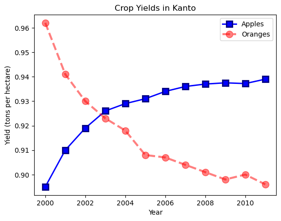
Das Argument fmt bietet eine Abkürzung für die Angabe des Linienstils, der Markierung und der Linienfarbe. Es kann als drittes Argument für plt.plot bereitgestellt werden.
fmt = '[marker][line][color]'Code
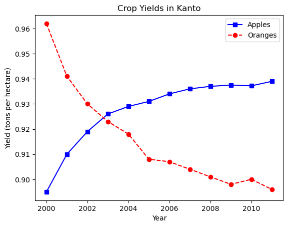
Wenn in fmt kein Linienstil angegeben ist, werden nur Markierungen gezeichnet.
8.2.7 Ändern der Figurengröße
Mit der Funktion plt.figure können Sie die Größe der Figur ändern.
8.2.8 Verbesserung der Standardstile mit Seaborn
Eine einfache Möglichkeit, Ihren Diagrammen ein ansprechendes Aussehen zu verleihen, besteht darin, einige in der Seaborn-Bibliothek bereitgestellte Standardstile zu verwenden. Diese können global mit der Funktion sns.set_style angewendet werden. Eine vollständige Liste der vordefinierten Stile finden Sie hier.
Code
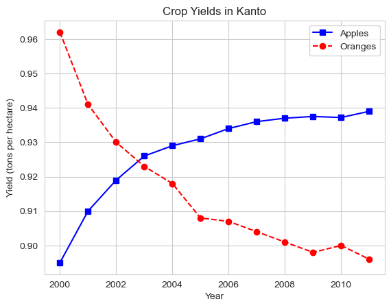
Code
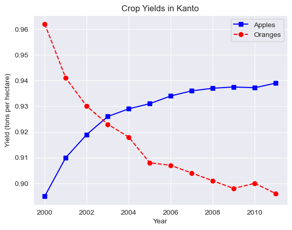
Sie können Standardstile auch direkt bearbeiten, indem Sie das Wörterbuch matplotlib.rcParams ändern. Erfahren Sie mehr hier.
RcParams({'_internal.classic_mode': False,
'agg.path.chunksize': 0,
'animation.bitrate': -1,
'animation.codec': 'h264',
'animation.convert_args': ['-layers', 'OptimizePlus'],
'animation.convert_path': 'convert',
'animation.embed_limit': 20.0,
'animation.ffmpeg_args': [],
'animation.ffmpeg_path': 'ffmpeg',
'animation.frame_format': 'png',
'animation.html': 'none',
'animation.writer': 'ffmpeg',
'axes.autolimit_mode': 'data',
'axes.axisbelow': True,
'axes.edgecolor': 'white',
'axes.facecolor': '#EAEAF2',
'axes.formatter.limits': [-5, 6],
'axes.formatter.min_exponent': 0,
'axes.formatter.offset_threshold': 4,
'axes.formatter.use_locale': False,
'axes.formatter.use_mathtext': False,
'axes.formatter.useoffset': True,
'axes.grid': True,
'axes.grid.axis': 'both',
'axes.grid.which': 'major',
'axes.labelcolor': '.15',
'axes.labelpad': 4.0,
'axes.labelsize': 'medium',
'axes.labelweight': 'normal',
'axes.linewidth': 0.8,
'axes.prop_cycle': cycler('color', ['#1f77b4', '#ff7f0e', '#2ca02c', '#d62728', '#9467bd', '#8c564b', '#e377c2', '#7f7f7f', '#bcbd22', '#17becf']),
'axes.spines.bottom': True,
'axes.spines.left': True,
'axes.spines.right': True,
'axes.spines.top': True,
'axes.titlecolor': 'auto',
'axes.titlelocation': 'center',
'axes.titlepad': 6.0,
'axes.titlesize': 'large',
'axes.titleweight': 'normal',
'axes.titley': None,
'axes.unicode_minus': True,
'axes.xmargin': 0.05,
'axes.ymargin': 0.05,
'axes.zmargin': 0.05,
'axes3d.grid': True,
'axes3d.xaxis.panecolor': (0.95, 0.95, 0.95, 0.5),
'axes3d.yaxis.panecolor': (0.9, 0.9, 0.9, 0.5),
'axes3d.zaxis.panecolor': (0.925, 0.925, 0.925, 0.5),
'backend': 'module://matplotlib_inline.backend_inline',
'backend_fallback': True,
'boxplot.bootstrap': None,
'boxplot.boxprops.color': 'black',
'boxplot.boxprops.linestyle': '-',
'boxplot.boxprops.linewidth': 1.0,
'boxplot.capprops.color': 'black',
'boxplot.capprops.linestyle': '-',
'boxplot.capprops.linewidth': 1.0,
'boxplot.flierprops.color': 'black',
'boxplot.flierprops.linestyle': 'none',
'boxplot.flierprops.linewidth': 1.0,
'boxplot.flierprops.marker': 'o',
'boxplot.flierprops.markeredgecolor': 'black',
'boxplot.flierprops.markeredgewidth': 1.0,
'boxplot.flierprops.markerfacecolor': 'none',
'boxplot.flierprops.markersize': 6.0,
'boxplot.meanline': False,
'boxplot.meanprops.color': 'C2',
'boxplot.meanprops.linestyle': '--',
'boxplot.meanprops.linewidth': 1.0,
'boxplot.meanprops.marker': '^',
'boxplot.meanprops.markeredgecolor': 'C2',
'boxplot.meanprops.markerfacecolor': 'C2',
'boxplot.meanprops.markersize': 6.0,
'boxplot.medianprops.color': 'C1',
'boxplot.medianprops.linestyle': '-',
'boxplot.medianprops.linewidth': 1.0,
'boxplot.notch': False,
'boxplot.patchartist': False,
'boxplot.showbox': True,
'boxplot.showcaps': True,
'boxplot.showfliers': True,
'boxplot.showmeans': False,
'boxplot.vertical': True,
'boxplot.whiskerprops.color': 'black',
'boxplot.whiskerprops.linestyle': '-',
'boxplot.whiskerprops.linewidth': 1.0,
'boxplot.whiskers': 1.5,
'contour.algorithm': 'mpl2014',
'contour.corner_mask': True,
'contour.linewidth': None,
'contour.negative_linestyle': 'dashed',
'date.autoformatter.day': '%Y-%m-%d',
'date.autoformatter.hour': '%m-%d %H',
'date.autoformatter.microsecond': '%M:%S.%f',
'date.autoformatter.minute': '%d %H:%M',
'date.autoformatter.month': '%Y-%m',
'date.autoformatter.second': '%H:%M:%S',
'date.autoformatter.year': '%Y',
'date.converter': 'auto',
'date.epoch': '1970-01-01T00:00:00',
'date.interval_multiples': True,
'docstring.hardcopy': False,
'errorbar.capsize': 0.0,
'figure.autolayout': False,
'figure.constrained_layout.h_pad': 0.04167,
'figure.constrained_layout.hspace': 0.02,
'figure.constrained_layout.use': False,
'figure.constrained_layout.w_pad': 0.04167,
'figure.constrained_layout.wspace': 0.02,
'figure.dpi': 100.0,
'figure.edgecolor': 'white',
'figure.facecolor': 'white',
'figure.figsize': [6.4, 4.8],
'figure.frameon': True,
'figure.hooks': [],
'figure.labelsize': 'large',
'figure.labelweight': 'normal',
'figure.max_open_warning': 20,
'figure.raise_window': True,
'figure.subplot.bottom': 0.11,
'figure.subplot.hspace': 0.2,
'figure.subplot.left': 0.125,
'figure.subplot.right': 0.9,
'figure.subplot.top': 0.88,
'figure.subplot.wspace': 0.2,
'figure.titlesize': 'large',
'figure.titleweight': 'normal',
'font.cursive': ['Apple Chancery',
'Textile',
'Zapf Chancery',
'Sand',
'Script MT',
'Felipa',
'Comic Neue',
'Comic Sans MS',
'cursive'],
'font.family': ['sans-serif'],
'font.fantasy': ['Chicago',
'Charcoal',
'Impact',
'Western',
'Humor Sans',
'xkcd',
'fantasy'],
'font.monospace': ['DejaVu Sans Mono',
'Bitstream Vera Sans Mono',
'Computer Modern Typewriter',
'Andale Mono',
'Nimbus Mono L',
'Courier New',
'Courier',
'Fixed',
'Terminal',
'monospace'],
'font.sans-serif': ['Arial',
'DejaVu Sans',
'Liberation Sans',
'Bitstream Vera Sans',
'sans-serif'],
'font.serif': ['DejaVu Serif',
'Bitstream Vera Serif',
'Computer Modern Roman',
'New Century Schoolbook',
'Century Schoolbook L',
'Utopia',
'ITC Bookman',
'Bookman',
'Nimbus Roman No9 L',
'Times New Roman',
'Times',
'Palatino',
'Charter',
'serif'],
'font.size': 10.0,
'font.stretch': 'normal',
'font.style': 'normal',
'font.variant': 'normal',
'font.weight': 'normal',
'grid.alpha': 1.0,
'grid.color': 'white',
'grid.linestyle': '-',
'grid.linewidth': 0.8,
'hatch.color': 'black',
'hatch.linewidth': 1.0,
'hist.bins': 10,
'image.aspect': 'equal',
'image.cmap': 'rocket',
'image.composite_image': True,
'image.interpolation': 'antialiased',
'image.lut': 256,
'image.origin': 'upper',
'image.resample': True,
'interactive': True,
'keymap.back': ['left', 'c', 'backspace', 'MouseButton.BACK'],
'keymap.copy': ['ctrl+c', 'cmd+c'],
'keymap.forward': ['right', 'v', 'MouseButton.FORWARD'],
'keymap.fullscreen': ['f', 'ctrl+f'],
'keymap.grid': ['g'],
'keymap.grid_minor': ['G'],
'keymap.help': ['f1'],
'keymap.home': ['h', 'r', 'home'],
'keymap.pan': ['p'],
'keymap.quit': ['ctrl+w', 'cmd+w', 'q'],
'keymap.quit_all': [],
'keymap.save': ['s', 'ctrl+s'],
'keymap.xscale': ['k', 'L'],
'keymap.yscale': ['l'],
'keymap.zoom': ['o'],
'legend.borderaxespad': 0.5,
'legend.borderpad': 0.4,
'legend.columnspacing': 2.0,
'legend.edgecolor': '0.8',
'legend.facecolor': 'inherit',
'legend.fancybox': True,
'legend.fontsize': 'medium',
'legend.framealpha': 0.8,
'legend.frameon': True,
'legend.handleheight': 0.7,
'legend.handlelength': 2.0,
'legend.handletextpad': 0.8,
'legend.labelcolor': 'None',
'legend.labelspacing': 0.5,
'legend.loc': 'best',
'legend.markerscale': 1.0,
'legend.numpoints': 1,
'legend.scatterpoints': 1,
'legend.shadow': False,
'legend.title_fontsize': None,
'lines.antialiased': True,
'lines.color': 'C0',
'lines.dash_capstyle': <CapStyle.butt: 'butt'>,
'lines.dash_joinstyle': <JoinStyle.round: 'round'>,
'lines.dashdot_pattern': [6.4, 1.6, 1.0, 1.6],
'lines.dashed_pattern': [3.7, 1.6],
'lines.dotted_pattern': [1.0, 1.65],
'lines.linestyle': '-',
'lines.linewidth': 1.5,
'lines.marker': 'None',
'lines.markeredgecolor': 'auto',
'lines.markeredgewidth': 1.0,
'lines.markerfacecolor': 'auto',
'lines.markersize': 6.0,
'lines.scale_dashes': True,
'lines.solid_capstyle': <CapStyle.round: 'round'>,
'lines.solid_joinstyle': <JoinStyle.round: 'round'>,
'markers.fillstyle': 'full',
'mathtext.bf': 'sans:bold',
'mathtext.cal': 'cursive',
'mathtext.default': 'it',
'mathtext.fallback': 'cm',
'mathtext.fontset': 'dejavusans',
'mathtext.it': 'sans:italic',
'mathtext.rm': 'sans',
'mathtext.sf': 'sans',
'mathtext.tt': 'monospace',
'patch.antialiased': True,
'patch.edgecolor': 'w',
'patch.facecolor': 'C0',
'patch.force_edgecolor': True,
'patch.linewidth': 1.0,
'path.effects': [],
'path.simplify': True,
'path.simplify_threshold': 0.111111111111,
'path.sketch': None,
'path.snap': True,
'pcolor.shading': 'auto',
'pcolormesh.snap': True,
'pdf.compression': 6,
'pdf.fonttype': 3,
'pdf.inheritcolor': False,
'pdf.use14corefonts': False,
'pgf.preamble': '',
'pgf.rcfonts': True,
'pgf.texsystem': 'xelatex',
'polaraxes.grid': True,
'ps.distiller.res': 6000,
'ps.fonttype': 3,
'ps.papersize': 'letter',
'ps.useafm': False,
'ps.usedistiller': None,
'savefig.bbox': None,
'savefig.directory': '~',
'savefig.dpi': 'figure',
'savefig.edgecolor': 'auto',
'savefig.facecolor': 'auto',
'savefig.format': 'png',
'savefig.orientation': 'portrait',
'savefig.pad_inches': 0.1,
'savefig.transparent': False,
'scatter.edgecolors': 'face',
'scatter.marker': 'o',
'svg.fonttype': 'path',
'svg.hashsalt': None,
'svg.image_inline': True,
'text.antialiased': True,
'text.color': '.15',
'text.hinting': 'force_autohint',
'text.hinting_factor': 8,
'text.kerning_factor': 0,
'text.latex.preamble': '',
'text.parse_math': True,
'text.usetex': False,
'timezone': 'UTC',
'tk.window_focus': False,
'toolbar': 'toolbar2',
'webagg.address': '127.0.0.1',
'webagg.open_in_browser': True,
'webagg.port': 8988,
'webagg.port_retries': 50,
'xaxis.labellocation': 'center',
'xtick.alignment': 'center',
'xtick.bottom': False,
'xtick.color': '.15',
'xtick.direction': 'out',
'xtick.labelbottom': True,
'xtick.labelcolor': 'inherit',
'xtick.labelsize': 'medium',
'xtick.labeltop': False,
'xtick.major.bottom': True,
'xtick.major.pad': 3.5,
'xtick.major.size': 3.5,
'xtick.major.top': True,
'xtick.major.width': 0.8,
'xtick.minor.bottom': True,
'xtick.minor.pad': 3.4,
'xtick.minor.size': 2.0,
'xtick.minor.top': True,
'xtick.minor.visible': False,
'xtick.minor.width': 0.6,
'xtick.top': False,
'yaxis.labellocation': 'center',
'ytick.alignment': 'center_baseline',
'ytick.color': '.15',
'ytick.direction': 'out',
'ytick.labelcolor': 'inherit',
'ytick.labelleft': True,
'ytick.labelright': False,
'ytick.labelsize': 'medium',
'ytick.left': False,
'ytick.major.left': True,
'ytick.major.pad': 3.5,
'ytick.major.right': True,
'ytick.major.size': 3.5,
'ytick.major.width': 0.8,
'ytick.minor.left': True,
'ytick.minor.pad': 3.4,
'ytick.minor.right': True,
'ytick.minor.size': 2.0,
'ytick.minor.visible': False,
'ytick.minor.width': 0.6,
'ytick.right': False})8.3 Streudiagramm
In einem Streudiagramm werden die Werte von zwei Variablen als Punkte in einem zweidimensionalen Gitter dargestellt. Darüber hinaus können Sie auch eine dritte Variable verwenden, um die Größe oder Farbe der Punkte zu bestimmen. Probieren wir es an einem Beispiel aus.
Der Irisblütendatensatz bietet Beispielmessungen von Kelch- und Blütenblättern für drei Blumenarten. Der Iris-Datensatz ist in der Seaborn-Bibliothek enthalten und kann als Pandas Data Frame geladen werden.
| sepal_length | sepal_width | petal_length | petal_width | species | |
|---|---|---|---|---|---|
| 0 | 5.1 | 3.5 | 1.4 | 0.2 | setosa |
| 1 | 4.9 | 3.0 | 1.4 | 0.2 | setosa |
| 2 | 4.7 | 3.2 | 1.3 | 0.2 | setosa |
| 3 | 4.6 | 3.1 | 1.5 | 0.2 | setosa |
| 4 | 5.0 | 3.6 | 1.4 | 0.2 | setosa |
| ... | ... | ... | ... | ... | ... |
| 145 | 6.7 | 3.0 | 5.2 | 2.3 | virginica |
| 146 | 6.3 | 2.5 | 5.0 | 1.9 | virginica |
| 147 | 6.5 | 3.0 | 5.2 | 2.0 | virginica |
| 148 | 6.2 | 3.4 | 5.4 | 2.3 | virginica |
| 149 | 5.9 | 3.0 | 5.1 | 1.8 | virginica |
150 rows × 5 columns
Versuchen wir, die Beziehung zwischen Kelchblattlänge und Kelchblattbreite zu veranschaulichen. Unser erster Instinkt könnte sein, mit plt.plot ein Liniendiagramm zu erstellen. Allerdings ist die Ausgabe nicht sehr aussagekräftig, da der Datensatz zu viele Kombinationen der beiden Eigenschaften enthält und es scheinbar keine einfache Beziehung zwischen ihnen gibt.
Mit der Scatterplot-Funktion von seaborn (importiert als sns) können wir ein Streudiagramm verwenden, um zu visualisieren, wie sich sepal length und sepal width unterscheiden.
8.3.1 Farbtöne hinzufügen
Beachten Sie, dass die Punkte im obigen Diagramm mit einigen Ausreißern unterschiedliche Cluster zu bilden scheinen. Wir können die Punkte einfärben, indem wir die Blumenart als hue verwenden. Wir können die Punkte auch mit dem Argument s vergrößern.
Code
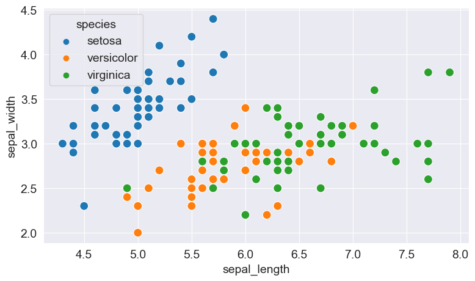
Durch das Hinzufügen von Farbtönen wird die Handlung informativer. Wir können sofort erkennen, dass die Blüten der Setosa-Art eine geringere Kelchlänge, aber eine größere Kelchbreite haben, während bei der Virginica-Art das Gegenteil der Fall ist.
8.3.2 Anpassen von Seaborn-Figuren
Da Seaborn intern die Plotfunktionen von Matplotlib verwendet, können wir Funktionen wie plt.figure und plt.title verwenden, um die Figur zu ändern.
8.3.3 Plotten mit Pandas Data Frames
Seaborn bietet integrierte Unterstützung für Pandas Data Frames. Anstatt jede Spalte als Reihe zu übergeben, können Sie auch Spaltennamen übergeben und das Argument data verwenden, um das Data Frame zu übergeben.
Code
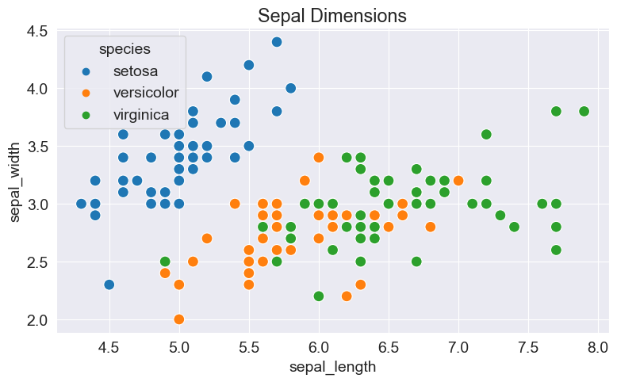
8.4 Histogramm
Ein Histogramm stellt die Verteilung von Daten dar, indem es Abschnitte entlang des Datenbereichs bildet und dann Balken zeichnet, um die Anzahl der Beobachtungen anzuzeigen, die in jeden Abschnitt fallen.
Lassen Sie uns als Beispiel visualisieren, wie die Werte der Kelchblattbreite im Blumendatensatz verteilt sind. Wir können die Funktion plt.hist verwenden, um ein Histogramm zu erstellen.
0 3.5
1 3.0
2 3.2
3 3.1
4 3.6
...
145 3.0
146 2.5
147 3.0
148 3.4
149 3.0
Name: sepal_width, Length: 150, dtype: float64| sepal_length | sepal_width | petal_length | petal_width | |
|---|---|---|---|---|
| count | 150.000000 | 150.000000 | 150.000000 | 150.000000 |
| mean | 5.843333 | 3.057333 | 3.758000 | 1.199333 |
| std | 0.828066 | 0.435866 | 1.765298 | 0.762238 |
| min | 4.300000 | 2.000000 | 1.000000 | 0.100000 |
| 25% | 5.100000 | 2.800000 | 1.600000 | 0.300000 |
| 50% | 5.800000 | 3.000000 | 4.350000 | 1.300000 |
| 75% | 6.400000 | 3.300000 | 5.100000 | 1.800000 |
| max | 7.900000 | 4.400000 | 6.900000 | 2.500000 |
Wir können sofort erkennen, dass die Werte der Kelchblattbreite im Bereich von 2,0 bis 4,5 liegen und etwa 35 Werte im Bereich von 2,9 bis 3,1 liegen, was der größte Bereich zu sein scheint.
8.4.1 Kontrolle der Größe und Anzahl der Bins
Mit dem Argument bins können wir die Anzahl der Bins oder die Größe jedes Bins steuern.
array([2. , 2.25, 2.5 , 2.75, 3. , 3.25, 3.5 , 3.75, 4. , 4.25, 4.5 ,
4.75])Code
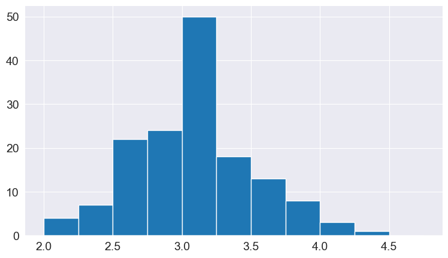
8.4.2 Mehrere Histogramme
Ähnlich wie bei Liniendiagrammen können wir mehrere Histogramme in einem einzigen Diagramm zeichnen. Wir können die Deckkraft jedes Histogramms verringern, sodass die Balken eines Histogramms die Balken anderer nicht verbergen.
Lassen Sie uns für jede Blumenart separate Histogramme zeichnen.
Code
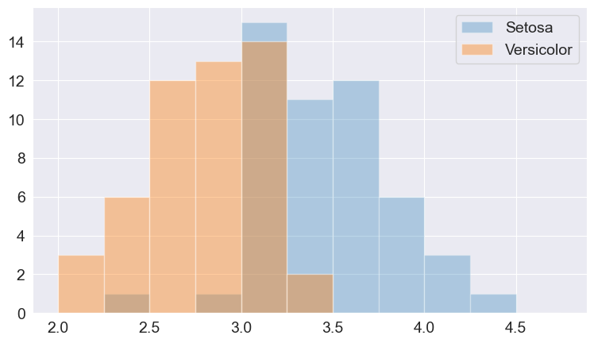
Wir können auch mehrere Histogramme übereinander stapeln.
Code
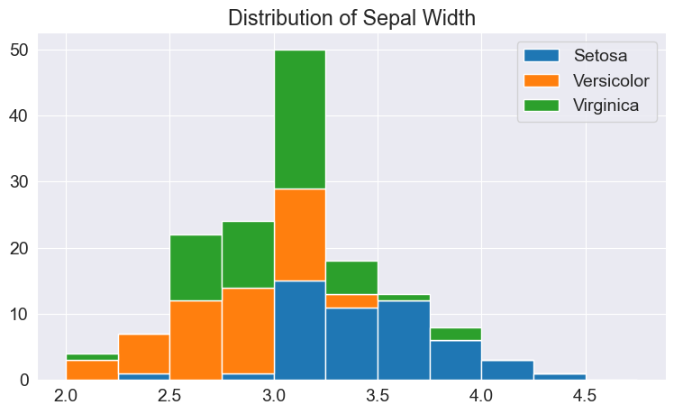
8.5 Balkendiagramm
8.5.1 Grundlagen
Balkendiagramme sind Liniendiagrammen sehr ähnlich, d. h. sie zeigen eine Abfolge von Werten, allerdings wird für jeden Wert ein Balken angezeigt und nicht die durch Linien verbundenen Punkte. Wir können die Funktion plt.bar verwenden, um ein Balkendiagramm zu zeichnen.
Wie Histogramme können auch Balken übereinander gestapelt werden. Um dies zu erreichen, verwenden wir das Argument bottom für plt.bar.
8.5.2 Balkendiagramme mit Durchschnittswerten
Schauen wir uns einen weiteren Beispieldatensatz an, der in Seaborn enthalten ist und tips heißt. Der Datensatz enthält Informationen zu Geschlecht, Tageszeit, Gesamtrechnung und Trinkgeldbetrag für Kunden, die über eine Woche hinweg ein Restaurant besuchen.
| total_bill | tip | sex | smoker | day | time | size | |
|---|---|---|---|---|---|---|---|
| 0 | 16.99 | 1.01 | Female | No | Sun | Dinner | 2 |
| 1 | 10.34 | 1.66 | Male | No | Sun | Dinner | 3 |
| 2 | 21.01 | 3.50 | Male | No | Sun | Dinner | 3 |
| 3 | 23.68 | 3.31 | Male | No | Sun | Dinner | 2 |
| 4 | 24.59 | 3.61 | Female | No | Sun | Dinner | 4 |
| ... | ... | ... | ... | ... | ... | ... | ... |
| 239 | 29.03 | 5.92 | Male | No | Sat | Dinner | 3 |
| 240 | 27.18 | 2.00 | Female | Yes | Sat | Dinner | 2 |
| 241 | 22.67 | 2.00 | Male | Yes | Sat | Dinner | 2 |
| 242 | 17.82 | 1.75 | Male | No | Sat | Dinner | 2 |
| 243 | 18.78 | 3.00 | Female | No | Thur | Dinner | 2 |
244 rows × 7 columns
Möglicherweise möchten wir ein Balkendiagramm zeichnen, um zu veranschaulichen, wie der durchschnittliche Rechnungsbetrag an verschiedenen Wochentagen variiert. Eine Möglichkeit, dies zu tun, wäre, die Tagesdurchschnitte zu berechnen und dann plt.bar zu verwenden (versuchen Sie es als Übung).
Da dies jedoch ein sehr häufiger Anwendungsfall ist, bietet die Seaborn-Bibliothek eine Barplot-Funktion, mit der Durchschnittswerte automatisch berechnet werden können.
Die Linien, die jeden Balken schneiden, stellen das Ausmaß der Variation in den Werten dar. So scheint es zum Beispiel so zu sein, dass die Schwankung der Gesamtrechnung freitags recht hoch und am Samstag geringer war.
Wir können auch ein hue-Argument angeben, um Balkendiagramme nebeneinander zu vergleichen, basierend auf einem dritten Merkmal, z. B. Sex.
Sie können die Balken einfach durch Vertauschen der Achsen horizontal machen.
8.6 Heatmap
Eine Heatmap wird verwendet, um zweidimensionale Daten wie eine Matrix oder eine Tabelle mithilfe von Farben zu visualisieren. Der beste Weg, es zu verstehen, ist, sich ein Beispiel anzusehen. Wir verwenden einen weiteren Beispieldatensatz von Seaborn mit der Bezeichnung „flights“, um die monatliche Passagierfrequenz an einem Flughafen über einen Zeitraum von 12 Jahren zu visualisieren.
| year | 1949 | 1950 | 1951 | 1952 | 1953 | 1954 | 1955 | 1956 | 1957 | 1958 | 1959 | 1960 |
|---|---|---|---|---|---|---|---|---|---|---|---|---|
| month | ||||||||||||
| Jan | 112 | 115 | 145 | 171 | 196 | 204 | 242 | 284 | 315 | 340 | 360 | 417 |
| Feb | 118 | 126 | 150 | 180 | 196 | 188 | 233 | 277 | 301 | 318 | 342 | 391 |
| Mar | 132 | 141 | 178 | 193 | 236 | 235 | 267 | 317 | 356 | 362 | 406 | 419 |
| Apr | 129 | 135 | 163 | 181 | 235 | 227 | 269 | 313 | 348 | 348 | 396 | 461 |
| May | 121 | 125 | 172 | 183 | 229 | 234 | 270 | 318 | 355 | 363 | 420 | 472 |
| Jun | 135 | 149 | 178 | 218 | 243 | 264 | 315 | 374 | 422 | 435 | 472 | 535 |
| Jul | 148 | 170 | 199 | 230 | 264 | 302 | 364 | 413 | 465 | 491 | 548 | 622 |
| Aug | 148 | 170 | 199 | 242 | 272 | 293 | 347 | 405 | 467 | 505 | 559 | 606 |
| Sep | 136 | 158 | 184 | 209 | 237 | 259 | 312 | 355 | 404 | 404 | 463 | 508 |
| Oct | 119 | 133 | 162 | 191 | 211 | 229 | 274 | 306 | 347 | 359 | 407 | 461 |
| Nov | 104 | 114 | 146 | 172 | 180 | 203 | 237 | 271 | 305 | 310 | 362 | 390 |
| Dec | 118 | 140 | 166 | 194 | 201 | 229 | 278 | 306 | 336 | 337 | 405 | 432 |
flights_df ist eine Matrix mit einer Zeile für jeden Monat und einer Spalte für jedes Jahr. Die Werte in der Matrix zeigen die Anzahl der Passagiere (in Tausend), die den Flughafen in einem bestimmten Monat eines bestimmten Jahres besuchten. Mit der Funktion sns.heatmap können wir die Passantenfrequenz am Flughafen visualisieren.
Die helleren Farben weisen auf eine höhere Passantenfrequenz am Flughafen hin. Wenn wir uns die Grafik ansehen, können wir zwei Dinge ableiten:
- Die Besucherfrequenz am Flughafen ist in jedem Jahr im Juli und August am höchsten.
- Die Besucherfrequenz am Flughafen nimmt in jedem Monat von Jahr zu Jahr zu.
Wir können auch die tatsächlichen Werte in jedem Block anzeigen, indem wir annot=True angeben und das Argument cmap verwenden, um die Farbpalette zu ändern.
Code
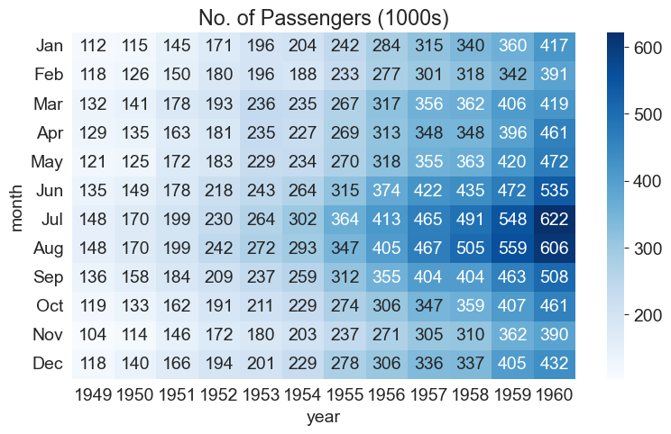
8.7 Bilder
Matplotlib kann auch zum Anzeigen von Bildern verwendet werden.
Bevor ein Bild angezeigt werden kann, muss es mit dem Modul PIL in den Speicher eingelesen werden. Nutzen wir hierfür das Bild aus dem Data Ordner chart.jpg.
Ein mit PIL geladenes Bild ist einfach ein dreidimensionales Numpy-Array, das Pixelintensitäten für die roten, grünen und blauen (RGB) Kanäle des Bildes enthält. Wir können das Bild mit np.array in ein Array konvertieren.
Wir können das PIL-Bild mit plt.imshow anzeigen.
Mit den entsprechenden Funktionen können wir die Achsen und Gitterlinien ausschalten und einen Titel anzeigen.
Um einen Teil des Bildes anzuzeigen, können wir einfach ein Segment aus dem Numpy-Array auswählen.
8.8 Mehrere Diagramme in einem Raster darstellen
8.8.1 Grundlagen
Matplotlib und Seaborn unterstützen auch das Plotten mehrerer Diagramme in einem Raster mithilfe von plt.subplots, das einen Satz von Achsen zurückgibt, die zum Plotten verwendet werden können.
Hier ist ein einzelnes Raster, das die verschiedenen Arten von Diagrammen zeigt, die wir in diesem Tutorial behandelt haben.
Code
fig, axes = plt.subplots(2, 3, figsize=(16, 8))
axes[0, 0].plot(years, apples, 's--b')
axes[0, 0].plot(years, oranges, 'o--r')
axes[0, 0].set_xlabel('Year')
axes[0, 0].set_ylabel('Yield (tons per hectar)')
axes[0, 0].set_title('Yield or Oranges')
axes[0, 0].legend(['Apples', 'Oranges'])
axes[0, 1].set_title('Sepal lenght vs Yield')
sns.scatterplot(x=flowers_df.sepal_length,
y=flowers_df.sepal_width,
hue=flowers_df.species,
s=100,
ax=axes[0, 1])
plt.tight_layout(pad=2);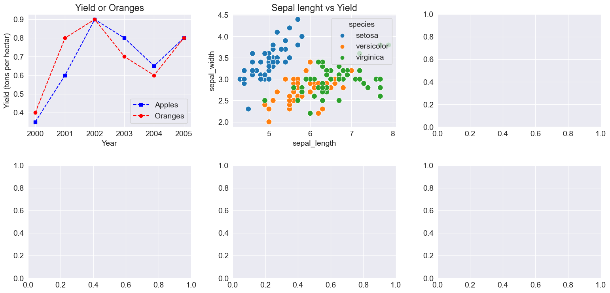
array([[<Axes: title={'center': 'Yield or Oranges'}, xlabel='Year', ylabel='Yield (tons per hectar)'>,
<Axes: title={'center': 'Sepal lenght vs Yield'}, xlabel='sepal_length', ylabel='sepal_width'>,
<Axes: >],
[<Axes: >, <Axes: >, <Axes: >]], dtype=object)Code
fig, axes = plt.subplots(2, 3, figsize=(16, 8))
# Use the axes for plotting
axes[0,0].plot(years, apples, 's-b')
axes[0,0].plot(years, oranges, 'o--r')
axes[0,0].set_xlabel('Year')
axes[0,0].set_ylabel('Yield (tons per hectare)')
axes[0,0].legend(['Apples', 'Oranges']);
axes[0,0].set_title('Crop Yields in Kanto')
# Pass the axes into seaborn
axes[0,1].set_title('Sepal Length vs. Sepal Width')
sns.scatterplot(x=flowers_df.sepal_length,
y=flowers_df.sepal_width,
hue=flowers_df.species,
s=100,
ax=axes[0,1]);
# Use the axes for plotting
axes[0,2].set_title('Distribution of Sepal Width')
axes[0,2].hist([setosa_df.sepal_width, versicolor_df.sepal_width, virginica_df.sepal_width],
bins=np.arange(2, 5, 0.25),
stacked=True);
axes[0,2].legend(['Setosa', 'Versicolor', 'Virginica']);
# Pass the axes into seaborn
axes[1,0].set_title('Restaurant bills')
sns.barplot(x='day', y='total_bill', hue='sex', data=tips_df, ax=axes[1,0]);
# Pass the axes into seaborn
axes[1,1].set_title('Flight traffic')
sns.heatmap(flights_df, cmap='Blues', ax=axes[1,1]);
# Plot an image using the axes
axes[1,2].set_title('Data Science Meme')
axes[1,2].imshow(img)
axes[1,2].grid(False)
axes[1,2].set_xticks([])
axes[1,2].set_yticks([])
plt.tight_layout(pad=2);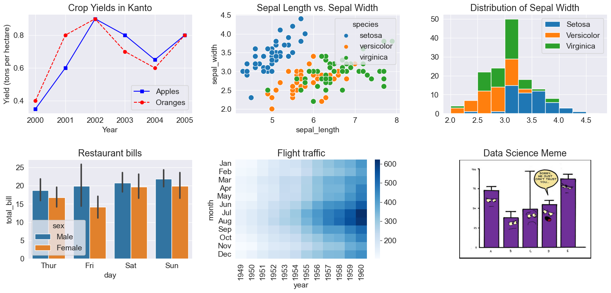
Eine vollständige Liste der unterstützten Funktionen finden Sie auf dieser Seite.
8.8.2 Parzellen mit Seaborn koppeln
Seaborn bietet außerdem eine Hilfsfunktion sns.pairplot, um automatisch verschiedene Arten von Diagrammen für Merkmalspaare innerhalb eines Data Frames zu zeichnen.
8.9 Weiterführende Literatur
In diesem Tutorial haben wir einige der grundlegenden Konzepte und beliebten Techniken zur Datenvisualisierung mit Matplotlib und Seaborn behandelt. Datenvisualisierung ist ein weites Feld und wir haben hier kaum an der Oberfläche gekratzt. Schauen Sie sich diese Referenzen an, um mehr zu erfahren und zu entdecken: